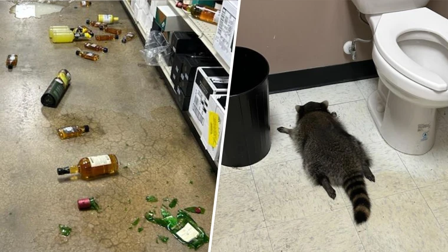

Raccoon found passed out in liquor store after drunken rampage
2025, December 5

Raccoon found passed out in liquor store after drunken rampage
2025, December 5
United States
On November 29, a liquor store employee in Ashland, Virginia was surprised to find many smashed bottles on the floor and their contents spilled through the store.The employee found a small raccoon asleep in the bathroom. According to Samantha Martin, an officer with the local animal control, it had broken in through a ceiling tile while the store was closed and fallen onto the shelf where the scotch and whiskey were stored.
Similar incidents have happened before. In 2013, a feral pig stole three six-packs of beer in a camping area near the De Grey River in Australia. According to The Guardian, the incident prompted warnings for campers to lock up their food and drink after the feral pig's rampage.
"I personally like raccoons," said Martin, the local animal control officer. "They are funny little critters. He fell through one of the ceiling tiles and went on a full-blown rampage, drinking everything." She took the raccoon to the local animal shelter, where staff confirmed it was drunk. "Another day in the life of an animal control officer, I guess," she joked.
The shelter's staff commended Martin for being able to handle the break-in, and were able to confirm that the raccoon had become sober. "After a few hours of sleep and zero signs of injury, other than maybe a hangover and poor life choices, he was safely released back to the wild, hopefully having learned that breaking and entering is not the answer," the shelter's staff said.
Raccoons have adapted so well to urban areas that a recent study has found that they have started to show physical changes that resemble traits of domesticated animals. According to the study, their snouts have become shorter than those of raccoons living in more natural environments. They have also developed traits such as smaller teeth, floppier ears, curlier tails, and reduced brain size.
One reason raccoons have become so abundant in urban areas is because they are successfully able to survive on human refuse. "Animals love our trash," Dr. Raffaela Lesch, an assistant professor of biology at the University of Arkansas at Little Rock, said recently. "It's an easy source of food. All they have to do is endure our presence, not be aggressive, and then they can feast on anything we throw away."